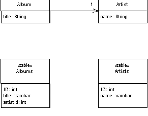
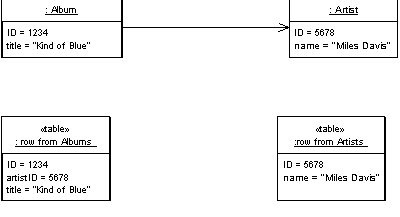
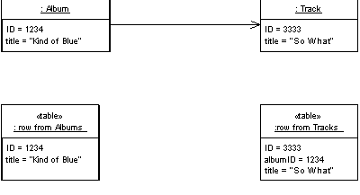
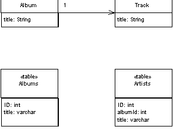
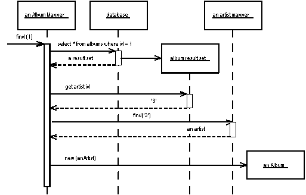
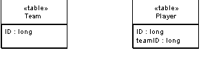

| Home | Articles | Talks | Links | Contact Me | ISA | ThoughtWorks |
Map an association between objects to a foreign key reference between tables

Objects can refer to each other directly by object references. Even the simplest object oriented system will contain a bevy of objects connected to each other in all sorts of interesting ways. To save these objects to a database, it's vital to save these references. However since the data in these references is specific to the specific instance of the running program, you can't just save raw data values.
This is further complicated by the fact that objects can easily hold collections of references to other objects. Such a structure violates the first normal form of relational databases.
A Foreign Key Mapping maps an object reference to a foreign key in the database.
The obvious key to this problem is Identity Field. Each object contains the database key from the appropriate database table. If two objects are linked together with an association, this association can be replaced by a foreign key in the database. In the simple form of this, when you save an album to the database, you save the ID of the artist that the album is linked to in the album record, as in Figure 1.
Figure 1: Mapping a simple reference to a foreign key
This is the simple case. A more complicated case turns up when you have a collection of objects. You can't save a collection of objects in the database, so you have to reverse the direction of the reference. So if you have a collection of tracks in the album, you use put a the foreign key of the album in the track record as in Figure 2.
Figure 2: Mapping a simple reference to a foreign key
Figure 3: Classes and tables for a multi-valued reference
The complicated part of this occurs when you have an update. Updating implies that tracks can be added and removed to the collection within an album. How can you tell what the alterations are to put them to the database? Essentially you have three options, delete and insert, add a back pointer, or diff the collection.
With delete and insert you delete all the tracks in the database that link to the album, and then insert all the ones currently on the album. At first glance this sounds pretty appalling, especially if you haven't changed any. But the logic is easy to implement and as such it works pretty well compared to the alternatives. The limitation is that you can only do this if tracks are Dependent Mappings. This means they must be owned by the album and can't be referred to outside the album.
Adding a back pointer puts a link from the track back to the album, effectively converting the association into a bidirectional association. This changes the object model, but now you can handle the update using the simple technique for single-valued fields on the other side.
If neither of those appeals, you can do a diff. There are two possibilities here, either diff with the current state of the database or diff with what you read the first time. Diffing with the database involves re-reading the collection back from the database. You then compare the collection you read from the collection in the album. Anything on the database that isn't in the album was clearly removed, anything in the album that isn't on the disk is clearly a new item to be added. You then have to look at the logic of the application to decide what to do with each item.
Diffing with what you read in the first place means you have to keep what you read. It's better as it avoids another database read. You can also diff what you first read with the database to help spot any concurrency problems.
In the general case anything that's added to the collection needs first to be checked to see if it's a new object, which you can do by seeing if it has a key. If there's no key, it needs to be added to the database. This step is made a lot easier by using Unit of Work because that way any new object will be inserted first automatically. In either case you then find the linked row in the database and update it's foreign key to point to the current album.
For removal you have to know whether the track was moved to another album, has no album, or is deleted altogether. If it's moved to another album it should be updated when you update the other album. If it has no album then you need to null the foreign key. If it's deleted then it should be deleted as things get deleted. Handling deletes is much easier if the back link is mandatory, as it is here where every track must be on an album. That way you don't have to worry about detecting items removed from the collection, since they will be updated when you process the album they've been added to.
If the link is immutable, meaning you can't change a track's album, then adding always means insertion and removing always means deletion, which makes things simpler still. Usually in this case you can make the track a Dependent Mapping.
One thing to watch out for is cycles in your links. Say you need to load an order, which has a link to a customer (which you load). The customer has a set of payments (which you load). Each payment has orders that it's paying for, which might include the original order you were trying to load. So you load the order (go back to the beginning of this paragraph.)
To avoid getting lost in recursive cycles you have two choices, which boil down to how you create your objects. Usually it's a good idea to have a creation method that includes data in the creation method that gives you a fully formed object. If you do that then you'll need to place Lazy Load at appropriate points to break the cycles. If you miss one you'll get a stack overflow, but if you're testing is good enough you can manage that burden.
The other is to create empty objects and immediately put them in an Identity Map. That way when you cycle back around the object is already loaded and you'll end the cycle. The objects you create aren't then fully formed, but they should be fully formed by the end of the load procedure. This avoids having to make special case decisions about the use of Lazy Load just to do a correct load.
A Foreign Key Mapping can be used for most associations between classes. The most common case where it isn't possible to use Foreign Key Mapping is with many-to-many associations. Foreign keys are single values and first normal form means you can't store multiple foreign keys in a single field. So instead you need to use Association Table Mapping
If you have a collection field with no back pointer you should consider whether the many side should be a Dependent Mapping, if so that can simplify your handling of the collection.
If the related object is a Value Object then you should use Embedded Value.
This is the simplest case, where an album has a single reference to an artist.
class Artist...
private String name;
public Artist(Long ID, String name) {
super(ID);
this.name = name;
}
public String getName() {
return name;
}
public void setName(String name) {
this.name = name;
}
class Album...
private String title;
private Artist artist;
public Album(Long ID, String title, Artist artist) {
super(ID);
this.title = title;
this.artist = artist;
}
public String getTitle() {
return title;
}
public void setTitle(String title) {
this.title = title;
}
public Artist getArtist() {
return artist;
}
public void setArtist(Artist artist) {
this.artist = artist;
}
Figure 4 shows how you can load an album. When an album mapper is told to load a particular album it queries the database and pulls back the result set for that object. It then queries the result set for each foreign key field and finds that object. Then it can create the album with the appropriate found objects. If the artist object was already in memory it would be fetched from the cache, otherwise it would be loaded from the database in the same way.
Figure 4: Sequence for loading a single valued field
The find operation uses abstract behavior to manipulate an Identity Map
class AlbumMapper...
public Album find(Long id) {
return (Album) abstractFind(id);
}
protected String findStatement() {
return "SELECT ID, title, artistID FROM albums WHERE ID = ?";
}
class AbstractMapper...
abstract protected String findStatement();
protected DomainObject abstractFind(Long id) {
DomainObject result = (DomainObject) loadedMap.get(id);
if (result != null) return result;
PreparedStatement stmt = null;
ResultSet rs = null;
try {
stmt = DB.prepare(findStatement());
stmt.setLong(1, id.longValue());
rs = stmt.executeQuery();
rs.next();
result = load(rs);
return result;
} catch (SQLException e) {
throw new ApplicationException(e);
} finally {cleanUp(stmt, rs);}
}
private Map loadedMap = new HashMap();
The find operation calls a load operation to actually load the data into the album.
class AbstractMapper...
protected DomainObject load(ResultSet rs) throws SQLException {
Long id = new Long(rs.getLong(1));
if (loadedMap.containsKey(id)) return (DomainObject) loadedMap.get(id);
DomainObject result = doLoad(id, rs);
doRegister(id, result);
return result;
}
protected void doRegister(Long id, DomainObject result) {
Assert.isFalse(loadedMap.containsKey(id));
loadedMap.put(id, result);
}
abstract protected DomainObject doLoad(Long id, ResultSet rs) throws SQLException;
class AlbumMapper...
protected DomainObject doLoad(Long id, ResultSet rs) throws SQLException {
String title = rs.getString(2);
long artistID = rs.getLong(3);
Artist artist = MapperRegistry.artist().find(artistID);
Album result = new Album(id, title, artist);
return result;
}
To update an album the foreign key value is taken from the linked artist object.
class AbstractMapper... abstract public void update(DomainObject arg);
class AlbumMapper...
public void update(DomainObject arg) {
PreparedStatement statement = null;
try {
statement = DB.prepare(
"UPDATE albums SET title = ?, artistID = ? WHERE id = ?");
statement.setLong(3, arg.getID().longValue());
Album album = (Album) arg;
statement.setString(1, album.getTitle());
statement.setLong(2, album.getArtist().getID().longValue());
statement.execute();
} catch (SQLException e) {
throw new ApplicationException(e);
} finally {
cleanUp(statement);
}
}
While it's conceptually clean to issue one query per table, it's often inefficient - since SQL are remote calls and remote calls are slow. So it's often worth finding ways to gather information from multiple tables in a single query. So I can modify the above example to use a single query to get both the album and artist information with a single SQL call. The first alteration is that of the SQL for the find statement.
class AlbumMapper...
public Album find(Long id) {
return (Album) abstractFind(id);
}
protected String findStatement() {
return "SELECT a.ID, a.title, a.artistID, r.name " +
" from albums a, artists r " +
" WHERE ID = ? and a.artistID = r.ID";
}
I then use a different load method that loads both the album and artist information together
class AlbumMapper...
protected DomainObject doLoad(Long id, ResultSet rs) throws SQLException {
String title = rs.getString(2);
long artistID = rs.getLong(3);
ArtistMapper artistMapper = MapperRegistry.artist();
Artist artist;
if (artistMapper.isLoaded(artistID))
artist = artistMapper.find(artistID);
else
artist = loadArtist(artistID, rs);
Album result = new Album(id, title, artist);
return result;
}
private Artist loadArtist(long id, ResultSet rs) throws SQLException {
String name = rs.getString(4);
Artist result = new Artist(new Long(id), name);
MapperRegistry.artist().register(result.getID(), result);
return result;
}
There's a tension here about where to put the method that maps the SQL result into the artist object. One the one hand it's better to put it in the artist's mapper, since it's the class that usually loads the artist. But on the other the load method is closely coupled to the SQL and thus should stay with the SQL query. In this case I've voted for the latter.
The case for a collection of references occurs when you have a field that is a collection. Here I'll use an example of teams and players where we'll assume we can't make player a Dependent Mapping.
Figure 5: A team with multiple players
class Team...
public String Name;
public IList Players {
get {return ArrayList.ReadOnly(playersData);}
set {playersData = new ArrayList(value);}
}
public void AddPlayer(Player arg) {
playersData.Add(arg);
}
private IList playersData = new ArrayList();
In the database this will be handled with the player record having a foreign key to the team.
Figure 6: Database structure for a team with multiple players
class TeamMapper...
public Team Find(long id) {
return (Team) AbstractFind(id);
}
class AbstractMapper...
protected DomainObject AbstractFind(long id) {
Assert.True (id != DomainObject.PLACEHOLDER_ID);
DataRow row = FindRow(id);
return (row == null) ? null : Load(row);
}
protected DataRow FindRow(long id) {
String filter = String.Format("id = {0}", id);
DataRow[] results = table.Select(filter);
return (results.Length == 0) ? null : results[0];
}
protected DataTable table {
get {return dsh.Data.Tables[TableName];}
}
public DataSetHolder dsh;
abstract protected String TableName {get;}
class TeamMapper...
protected override String TableName {
get {return "Teams";}
}
The data set holder is a class that holds onto the data set in use, together with the adapters needed to update it to the database.
class DataSetHolder... public DataSet Data = new DataSet(); private Hashtable DataAdapters = new Hashtable();
For this example, we'll assume it has already been populated by some appropriate queries.
The find method calls a load to actually load the data into the new object.
class AbstractMapper...
protected DomainObject Load (DataRow row) {
long id = (int) row ["id"];
if (identityMap[id] != null) return (DomainObject) identityMap[id];
else {
DomainObject result = CreateDomainObject();
result.Id = id;
identityMap.Add(result.Id, result);
doLoad(result,row);
return result;
}
}
abstract protected DomainObject CreateDomainObject();
private IDictionary identityMap = new Hashtable();
abstract protected void doLoad (DomainObject obj, DataRow row);
class TeamMapper...
protected override void doLoad (DomainObject obj, DataRow row) {
Team team = (Team) obj;
team.Name = (String) row["name"];
team.Players = MapperRegistry.Player.FindForTeam(team.Id);
}
To bring in the players, I execute a specialized finder on the player mapper.
class PlayerMapper...
public IList FindForTeam(long id) {
String filter = String.Format("teamID = {0}", id);
DataRow[] rows = table.Select(filter);
IList result = new ArrayList();
foreach (DataRow row in rows) {
result.Add(Load (row));
}
return result;
}
To update, the team saves its own data and delegates to the player mapper to save the data into the player table.
class AbstractMapper...
public virtual void Update (DomainObject arg) {
Save (arg, FindRow(arg.Id));
}
abstract protected void Save (DomainObject arg, DataRow row);
class TeamMapper...
protected override void Save (DomainObject obj, DataRow row){
Team team = (Team) obj;
row["name"] = team.Name;
savePlayers(team);
}
private void savePlayers(Team team){
foreach (Player p in team.Players) {
MapperRegistry.Player.LinkTeam(p, team.Id);
}
}
class PlayerMapper...
public void LinkTeam (Player player, long teamID) {
DataRow row = FindRow(player.Id);
row["teamID"] = teamID;
}
 |  |
{kind=link}
{kind=link}
{kind=link}